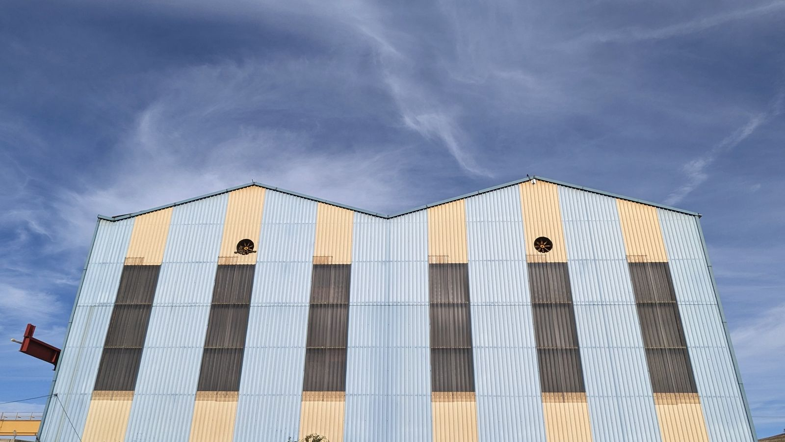

The market
Net Leases vs. Gross Leases: Who Pays What When Costs Rise
A triple-net lease quotes $40 a square foot and a gross lease quotes $58 — for the same space. The $18 gap is not a discount. It is the operating costs, moved from one side of the ledger to the other, and in 2026 they are moving faster than the rent.

In the spring of 2026, a tenant touring a 5,000-square-foot office suite in a gateway market received two quotes for the same space. The first said $58 a square foot. The second said $40. The tenant assumed the second landlord was desperate. Neither quote was a bargain, and neither was a lie. The $58 quote was a full-service gross lease — one number, everything inside it. The $40 quote was triple net — base rent only, with the building's taxes, insurance, and maintenance billed on top. By the end of the first year, the tenant on the $40 quote was paying $62 a square foot all-in. The tenant on the $58 quote was still paying $58. The gap between the two numbers was not a discount. It was the operating costs, moved from one side of the ledger to the other.
What the three structures actually split
Every commercial lease is a contract about one thing: who pays the building's operating costs. Those costs are property taxes, insurance, maintenance and common-area maintenance, and utilities. A gross lease keeps them with the landlord. A triple-net lease pushes nearly all of them onto the tenant. Modified gross sits in between, and it is where most American office deals actually settle.
Under a full-service gross lease, the tenant pays one flat rent and the landlord covers everything else — taxes, insurance, maintenance, CAM, usually utilities. The tenant gets a single predictable number. The landlord keeps the upside if operating costs fall and eats the downside if they rise. The cost of that simplicity is the operating-expense load the landlord carries directly. Brad Hargreaves, founder of Thesis Driven, puts the typical range at 25% to 40% of revenue for the main asset classes. In a gross lease, that entire load sits on the landlord's side of the ledger, which is why gross rents are quoted higher than net rents for the same space.
Under a triple-net lease, the tenant pays base rent plus its share of property taxes, insurance, and maintenance and CAM, plus its own utilities and interior upkeep. The landlord keeps only the structure and the roof. A step further, the absolute-net lease pushes even the roof and structure onto the tenant, leaving the landlord with no obligations at all — the structure behind most freestanding retail and restaurant deals. Modified gross splits the difference by category: the tenant typically pays utilities and janitorial directly while the landlord covers tax, insurance, and structure, or the tenant pays its share of operating-expense increases above a stipulated base year while the landlord absorbs the rest.
The labels are not standardized, and they are not used the same way everywhere. What decides the money is the operating-expense clause, not the name on the listing. A tenant who compares a $40 triple-net quote with a $58 gross quote without reading the clause is comparing a price with a down payment.
The same suite, three rents
The arithmetic is cleanest on a single building. Take a 5,000-square-foot Class A office suite in a Tier 1 metro, priced three ways. On a full-service gross lease the all-in cost is $58 a square foot a year — base rent only, nothing on top. On a modified gross lease the base rent is $48, plus $5 of CAM and $4 of utilities the tenant pays directly, for $57 all-in. On a triple-net lease the base rent is $40, plus an $11 pass-through for taxes, insurance, and structure, $7 of CAM, and $4 of utilities — $62 all-in. The cheapest headline rent produces the most expensive first year, because the pass-throughs were benchmarked conservatively and the gross rent was set by a landlord who had already priced the risk.
The same point shows up in a worked reconciliation. A 40,000-square-foot multi-tenant building with $304,000 of recoverable operating expenses in 2025 — $7.60 a square foot — saw the pool rise to $320,000 in 2026, or $8.00 a square foot. A 4,000-square-foot suite holds a 10% share: $32,000 of CAM, taxes, and insurance for the year. Under a full-service gross lease the tenant pays none of it. Under a modified gross lease with a 2025 base year, the tenant pays $2,000 — only the increase. With a $7.75-a-square-foot expense stop, the tenant pays $1,000. Under a triple-net lease, the tenant pays the full $32,000. Every structure divides the same $32,000. The question is only who holds it, and the answer changes the rent by more than the rent itself.
The pattern holds across property types, with the structure following the asset. For multi-tenant office, modified gross or triple net dominates, with triple net the standard for deals above 5,000 square feet. Retail strip centers run triple net with a percentage-rent overlay. Freestanding retail and restaurants run absolute net. Industrial is triple net almost everywhere — the rare exceptions are small flex suites and older locally owned buildings, where modified gross still appears.
Where tenants get caught
The trap is not the first year. It is year five. Without negotiated caps, a triple-net bill can run 20% or more above its first-year level by year five, while base rent — typically escalating at 3% a year — has risen about 16%. The pass-through grows faster than the rent it sits on top of, because property taxes get reassessed after a sale, insurance premiums have swung hard in recent years, and maintenance and CAM drift up with labor and materials. A tenant who budgeted the first-year number and never modeled the fifth is the tenant who discovers, in year four, that the cheap lease was the expensive one.
The Greensboro industrial market shows how the mechanics bite in practice. Almost all Triad industrial space is quoted triple net: the asking rent, about $6.37 a square foot a year on average per Cushman & Wakefield's third-quarter 2026 figures, covers the landlord's return, and the tenant also pays its share of taxes, insurance, and maintenance. Property taxes alone run about $1.59 per $100 of assessed value inside the city limits — 78.95 cents county plus 79.85 cents city — and a worked example on a 20,000-square-foot warehouse puts the triple-net charges at roughly 20% on top of the asking rent: $7.02 of base rent plus $0.79 of taxes and the rest of the pass-throughs, for $8.46 all-in. Guilford and Davidson counties completed 2026 reappraisals, and a 2026 state law delayed the new values until fiscal 2027–28 — which means the tax line in every Triad lease has a known step-change coming, and the tenant on a triple-net lease is the one who pays it.
The second trap is the base year. In a modified gross lease, the tenant pays only the increase above the base year — but the base year is a negotiated number, and the pool it applies to is negotiable too. A lease that sets the base year pool-by-pool lets the landlord reset individual categories. A lease with an expense stop sets a single dollar threshold. The worked reconciliation above shows the difference in cash: $2,000 against the same building's $1,000, on the same $32,000 pool, depending on which mechanism the lease uses. Tenants who treat the base year as boilerplate pay for it in years two through five.
The third trap is the fit-out. A shorter lease with a triple-net structure can look cheap until the tenant prices the build-out it must fund. Cushman & Wakefield's 2026 fit-out cost guide has U.S. costs up 5% year over year, with New York at $212.59 a square foot and San Francisco at $219.26. Those are landlord numbers in a gross lease and tenant numbers in a net lease. The structure decides who writes the check.
Who should sign which
The honest answer is that the right structure follows the tenant's tolerance for variable cost, not the headline rent. A tenant with a finance team that reconciles CAM statements annually, audits the tax assessment, and models the fifth year can take the triple-net deal and pocket the lower base rent. A tenant without that capacity — a small professional firm, a retailer with thin margins — is usually better off paying the higher gross rent and buying certainty. The gross lease is insurance, priced into the rent. The triple-net lease is a variable-rate obligation, priced into the pass-through.
For landlords, the logic runs in reverse. In a soft office market — national vacancy 18.2% and asking rents $37.95 a square foot in CBRE's third-quarter 2026 figures, San Francisco vacancy 26.7% as of September — the landlord who offers a gross lease is absorbing operating-cost inflation to win the signature. The landlord who offers triple net is passing it through. Both are rational. The market is telling the tenant which risk the landlord is willing to hold, and the tenant should read that signal before signing.
The counterargument deserves its weight, because the gross lease is not a free lunch. A landlord who absorbs operating costs prices them into the rent with a margin, and a tenant who never audits the pass-through would have paid less under triple net. The 5,000-square-foot example above proves the point in reverse: the gross lease at $58 was cheaper than the triple-net lease at $62 all-in, but only because the triple-net pass-throughs were benchmarked high. A tenant who negotiates the pass-through estimates down — with two to three years of actual operating-expense history, not just this year's estimate — can make the triple-net deal the cheaper one. The structure is not the price. The clause is.
For a tenant, the practical conclusion is to compare all-in cost over the full term, not the first-year headline, and to negotiate caps on the pass-through before negotiating the base rent. For a landlord, it is to price the operating-cost risk explicitly instead of burying it in the rent, because a tenant who discovers the pass-through in year three is a tenant who does not renew in year five. And for anyone in the business of rent data, the missing number is now obvious. Asking rents are published quarterly by every major brokerage. All-in occupancy cost — base rent plus pass-throughs, by structure, by market — is not. The firm that publishes it will own the next argument in commercial real estate.
The category-defining name in commercial rent data — commercialrentdata.com — is currently available for acquisition by the firm positioned to own this space.
Sources: Thesis Driven, Types of Commercial Leases: An Operator's Playbook (2026) — gross, modified gross, triple net structures; operating expenses 25–40% of revenue (Brad Hargreaves), KW Commercial / Matt MacLanders, October 22, 2026: Greensboro industrial NNN — Cushman & Wakefield Q3 2026 asking ~$6.37/SF; taxes $1.59 per $100 assessed; NNN adds ~20% to asking rent, Commercial Lease Cost, Commercial Lease Types: NNN vs Gross vs Modified Gross — 5,000 SF Class A office worked example ($58 gross / $57 modified gross / $62 NNN all-in); NNN year-5 20%+ above year-1 without caps, Charge Recoveries, Types of Commercial Leases — 40,000 SF building reconciliation ($304,000 in 2025 to $320,000 in 2026; 4,000 SF suite 10% share $32,000), CBRE Q3 2026: U.S. office vacancy 18.2%, asking rent $37.95/SF; San Francisco vacancy 26.7% (September 2026), Stacker / Press Publications, 2026: Cushman & Wakefield 2026 fit-out cost guide — U.S. costs up 5% YoY; New York $212.59/SF; San Francisco $219.26/SF.
This domain is for sale
$18,888
The exact-match .com for the business this article describes. One payment, one secure transfer through Afternic.
Buy CommercialRentData.comQuestions? info@primedomaincapital.com